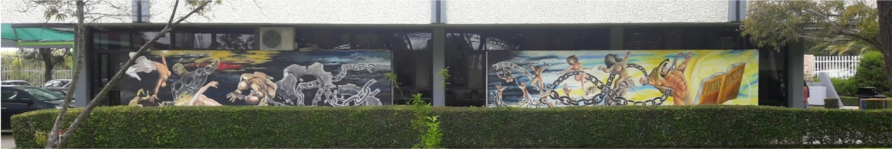

Conócenos
El Instituto Tecnológico Superior de Zacatecas Norte es una institución comprometida con la excelencia académica, la formación integral de sus estudiantes y el desarrollo de la región. Conoce más sobre nuestra filosofía, valores y equipo directivo.
Filosofía Institucional
FILOSOFÍA
 MisiónOfrecer educación científica y tecnológica de calidad, para la formación integral de profesionistas con perspectiva global, basada en principios de inclusión, sustentabilidad, innovación y emprendimiento.
VisiónSer una institución educativa orientada hacia planos de excelencia con programas académicos acreditados internacionalmente que fortalezcan la investigación y vinculación con su entorno.
Nuestros Valores
Una vez que se han planteado tanto la Misión como la Visión, es necesario desagregar de ellas los principios o valores de nuestro Tecnológico. Se reconoce que, como toda Institución social, el tecnológico está constituido no sólo por su infraestructura material, sino que en su interior, se generan múltiples relaciones entre las personas que en ella se desarrollan y conviven. En este proceso de interrelaciones se comparten valores comunes, entre los que se destacan los siguientes:
RESPETO: Es la actitud de tolerancia y aceptación de los demás, en un clima de libertad de acción que permita construir relaciones armoniosas.
FRATERNIDAD: Es el espíritu de solidaridad que nos integra para el logro de objetivos comunes que permiten el desarrollo individual y colectivo.
DISCIPLINA: Es la libre aceptación de normas que garantizan el orden y la armonía, para el logro de objetivos y metas personales y organizacionales.
CALIDAD ACADÉMICA: Proceso de mejora continua en los servicios educativos, tendiente a desarrollar las capacidades y potencialidades del individuo en búsqueda de la EXCELENCIA.
ESPÍRITU DE SERVICIO: Es la disposición permanente y positiva para realizar esfuerzos extraordinarios con el fin de proporcionar algo útil y benéfico.
Directorio Institucional
| Cargo | Sujeto Obligado | Teléfono | Extensión | Correo Electrónico |
|---|---|---|---|---|
| Director General | Ing. Yahaira Tanairi Jiménez Reyes | 498 488 30 02 | 1000 | itszndirecciongeneral@gmail.com |
| Subdirectora de Planeación | 498 488 30 02 | 1006 | planeacion@itszn.edu.mx | |
| Director Académico | I.S.C. Jairo Isaac Lira Leyva | 498 488 30 02 | 1005 | dir.acad@itszn.edu.mx |
| Director de Planeación y Vinculación | Lic. Pedro Muro Zúñiga | 498 488 30 02 | 1013 | vinculación@itszn.edu.mx |
| Jefa del Departamento de Servicios Escolares | C.P. Elvia Alvarado Díaz | 498 488 30 02 | 1010 | serv_escolar@itszn.edu.mx |
| Jefa de Div. de Ing. en Sistemas y TIC | L.I. Mónica Hernández Solís | 498 488 30 02 | 1011 | div_iisc@itszn.edu.mx |
| Jefa de Div. de Ing. en Admón. e Ing. Gestión Emp. | L.A. Alma Rosa Pizarro Barrientos | 498 488 30 02 | 1003 | div_ia@itszn.edu.mx |
| Jefe de División de Contador Público | L.C. José Antonio Ramírez Silva | 498 488 30 02 | 1004 | div_cp@itszn.edu.mx |
| Jefe de Div. de Ing. en Industrias Alimentarias | Ing. José Mancillas Medina | 498 488 30 02 | 1021 | div_iia@itszn.edu.mx |
| Jefe de Division de Ingenieria Electromecánica | Ing. Sandrac Abimael Castruita Pérez | 498 488 30 02 | 1019 | div_iem@itszn.edu.mx |
| Subdirección de Posgrado e Investigación | L.I. Abraham Esquivel Salas | 498 488 30 02 | 1008 | inovacion_calidad@itszn.edu.mx |
| Jefe del Departamento de Personal | C.P. Jaqueline Delfín Sánchez | 498 488 30 02 | 1002 | recursos_humanos@itszn.edu.mx |
| Jefe del Depto. de Recursos Materiales y Servicios | L.A. Miriam Karina Juárez Canales | 498 488 30 02 | 1020 | recursos_materiales@itszn.edu.mx |
| Jefa del Departamento Residencias Profesionales y Servicio Social | I.I.A. Alejandra Alvarado Juárez | 498 488 30 02 | ||
| Jefa del Depto. de Desarrollo Académico | L.A. Lucía Faviola Álvarez Díaz | 498 488 30 02 | 1026 | desaca@itszn.edu.mx |
| Titular de la Unidad de Transparencia | I.S.C. Hugo Antonio Letechipía Chávez | 498 488 30 02 | 1028 | transparencia@itszn.edu.mx |
| Subdirección de Vinculación | Arq. Teodoro Hernández Ríos | 498 488 30 02 | 1013 | |
| Jefe del Centro de Cómputo | L.I. José María Salas Torres | 498 488 30 02 | 1025 y 1025 | ccomputo@itszn.edu.mx |
| Jefa del Depto. de Difusión y Concertación | L.C. Dagoberto Fajardo Menchaca | 498 488 30 02 | 1014 | cdifusion@itszn.edu.mx |
| Jefa del Depto. de Planeacion y Programación | C.P. Andrea Nohelly García Gaytán | 498 488 30 02 | 1006 | planeacion@itszn.edu.mx |
| Jefa del Depto. de Vinculación | L.A. Ma Teresa Rodríguez Bautista | 498 488 30 02 | dep_vinculacion@zacatecasnte.tecnm.mx | |
| Jefa del Centro de Idiomas | L.A. Martha Patricia Osornio González | 498 488 30 02 | 1012 | |
| Jefe del Centro de Información | Jesús Gerardo Sánchez Torres | 498 488 30 02 | 1028 | |
| Unidad Médica | Dra. Aurora Elizabeth Arizmendi del Ángel | 498 488 30 02 | 1016 | |
| Recepción | Susana Zúñiga Rodríguez | 498 488 30 02 | 1001 | |
| Registro | Auxiliares y Personal Administrativo | 498 488 30 02 | 1022 | |
| Caseta | Personal de Servicios Generales | 498 488 30 02 | 1017 | |
| Director Académico | I.S.C. Jairo Isaac Lira Leyva | 498 488 30 02 | 1005 | dir.acad@itszn.edu.mx |
| Director de Planeación y Vinculación | Lic. Pedro Muro Zúñiga | 498 488 30 02 | 1013 | vinculación@itszn.edu.mx |
| Jefa del Departamento de Servicios Escolares | C.P. Elvia Alvarado Díaz | 498 488 30 02 | 1010 | serv_escolar@itszn.edu.mx |
| Jefa de Div. de Ing. en Sistemas y TIC | L.I. Mónica Hernández Solís | 498 488 30 02 | 1011 | div_iisc@itszn.edu.mx |
| Jefa de Div. de Ing. en Admón. e Ing. Gestión Emp. | L.A. Alma Rosa Pizarro Barrientos | 498 488 30 02 | 1003 | div_ia@itszn.edu.mx |
| Jefe de División de Contador Público | L.C. José Antonio Ramírez Silva | 498 488 30 02 | 1004 | div_cp@itszn.edu.mx |
| Jefe de Div. de Ing. en Industrias Alimentarias | Ing. José Mancillas Medina | 498 488 30 02 | 1021 | div_iia@itszn.edu.mx |
| Jefe de Division de Ingenieria Electromecánica | Ing. Sandrac Abimael Castruita Pérez | 498 488 30 02 | 1019 | div_iem@itszn.edu.mx |
| Subdirección de Posgrado e Investigación | L.I. Abraham Esquivel Salas | 498 488 30 02 | 1008 | inovacion_calidad@itszn.edu.mx |
| Jefe del Departamento de Personal | C.P. Jaqueline Delfín Sánchez | 498 488 30 02 | 1002 | recursos_humanos@itszn.edu.mx |
| Jefe del Depto. de Recursos Materiales y Servicios | L.A. Miriam Karina Juárez Canales | 498 488 30 02 | 1020 | recursos_materiales@itszn.edu.mx |
| Jefa del Departamento Residencias Profesionales y Servicio Social | I.I.A. Alejandra Alvarado Juárez | 498 488 30 02 | ||
| Jefa del Depto. de Desarrollo Académico | L.A. Lucía Faviola Álvarez Díaz | 498 488 30 02 | 1026 | desaca@itszn.edu.mx |
| Titular de la Unidad de Transparencia | I.S.C. Hugo Antonio Letechipía Chávez | 498 488 30 02 | 1028 | transparencia@itszn.edu.mx |
| Subdirección de Vinculación | Arq. Teodoro Hernández Ríos | 498 488 30 02 | 1013 | |
| Jefe del Centro de Cómputo | L.I. José María Salas Torres | 498 488 30 02 | 1025 y 1025 | ccomputo@itszn.edu.mx |
| Jefa del Depto. de Difusión y Concertación | L.C. Dagoberto Fajardo Menchaca | 498 488 30 02 | 1014 | cdifusion@itszn.edu.mx |
| Jefa del Depto. de Planeacion y Programación | C.P. Andrea Nohelly García Gaytán | 498 488 30 02 | 1006 | planeacion@itszn.edu.mx |
| Jefa del Depto. de Vinculación | L.A. Ma Teresa Rodríguez Bautista | 498 488 30 02 | dep_vinculacion@zacatecasnte.tecnm.mx | |
| Jefa del Centro de Idiomas | L.A. Martha Patricia Osornio González | 498 488 30 02 | 1012 | |
| Jefe del Centro de Información | Jesús Gerardo Sánchez Torres | 498 488 30 02 | 1028 | |
| Unidad Médica | Dra. Aurora Elizabeth Arizmendi del Ángel | 498 488 30 02 | 1016 | |
| Recepción | Susana Zúñiga Rodríguez | 498 488 30 02 | 1001 | |
| Registro | Auxiliares y Personal Administrativo | 498 488 30 02 | 1022 | |
| Caseta | Personal de Servicios Generales | 498 488 30 02 | 1017 |